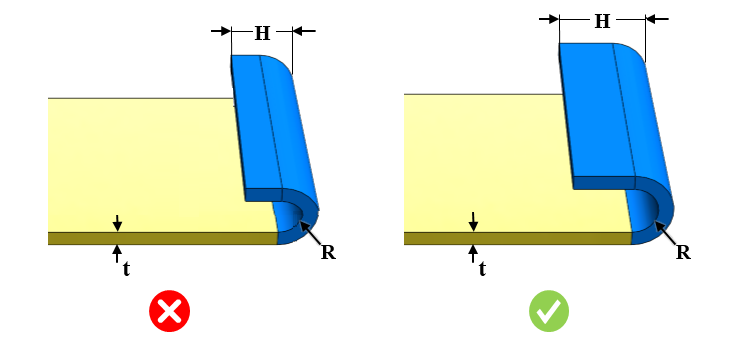

オープンヘムの最小半径は、設定可能な指定値以上である必要があります。
オープンヘムの半径と板厚の比は、設定可能な指定値以上である必要があります。デフォルトの比率は 0.5 です。
リターンフランジ高さと板厚の比は、設定可能な指定値以上である必要があります。デフォルトの比率は 4.0 です。
ルール UI では、材料の一覧は Map Material から読み込まれ、ユーザーは材料およびその値を設定できます。
材料とその値を設定した後、ユーザーは Ctrl+M コマンドを使用して、ルール UI 上でマテリアルグループおよびグレード付きの設定済み材料の一覧をフィルタ表示できます。同じキー（Ctrl+M）を使用してフィルタをリセットできます。

ここでは、
H = リターンフランジ長さ
R = ヘム半径
t = 板厚